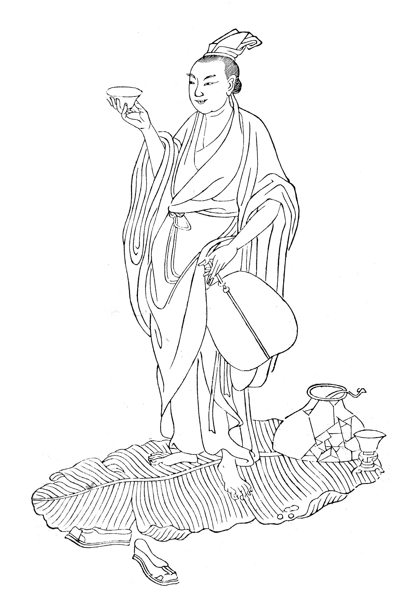
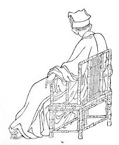

杜少府之任蜀州 王勃
城 闕 輔 三 秦 ，風 煙 望 五 津 。
與 君 離 別 意 ，同 是 宦 遊 人 。
海 內 存 知 己 ，天 涯 若 比 鄰 。
無 為 在 歧 路 ，兒 女 共 沾 巾 。

漢江臨眺 王維
楚 塞 三 湘 接 ，荊 門 九 派 通 。
江 流 天 地 外 ，山 色 有 無 中 。
郡 邑 浮 前 浦 ，波 瀾 動 遠 空 。
襄 陽 好 風 日 ，留 醉 與 山 翁 。
送友人 李白
青 山 橫 北 郭 ，白 水 繞 東 城 。
此 地 一 為 別 ，孤 蓬 萬 里 征 。
浮 雲 遊 子 意 ，落 日 故 人 情 。
揮 手 自 茲 去 ，蕭 蕭 班 馬 鳴 。

月夜 杜甫
今 夜 鄜 州 月 ，閨 中 只 獨 看 。
遙 憐 小 兒 女 ，未 解 憶 長 安 。
香 霧 雲 鬟 濕 ，清 輝 玉 臂 寒 。
何 時 倚 虛 幌 ，雙 照 淚 痕 乾 。
過故人莊 孟浩然
故 人 具 雞 黍 ，邀 我 至 田 家 。
綠 樹 村 邊 合 ，青 山 郭 外 斜 。
開 軒 面 場 圃 ，把 酒 話 桑 麻 。
待 到 重 陽 日 ，還 來 就 菊 花 。